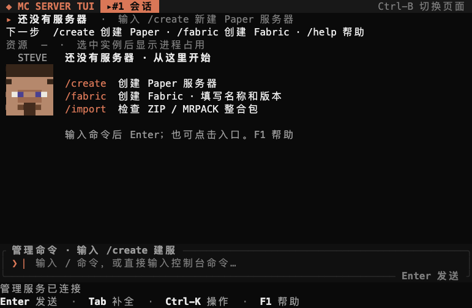
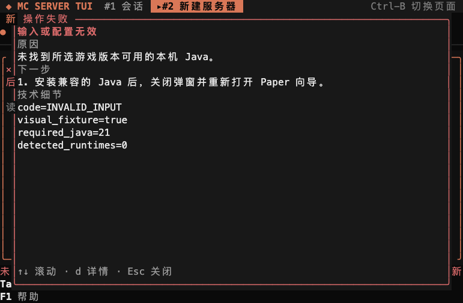

Start here
This guide takes you to three outcomes: a managed server, a client connection, and a verifiable world backup. For a first installation, follow chapters 2–4. For an existing instance, start at chapter 5. If an operation fails, use chapter 13. Each workflow includes an expected result; /help lists the commands in the app.
Before hosting a world
mc-server-tui is an independent terminal-based Minecraft Java server manager. It is not affiliated with Mojang, Microsoft, PaperMC, Modrinth, Fabric, or Forge. Minecraft and related trademarks belong to their respective owners.
You are responsible for:
- reviewing and accepting the Minecraft EULA yourself;
- using only server software, plugins, mods, packs, world data, and player data you are entitled to use;
- keeping independent backups outside this application;
- firewall, port forwarding, public exposure, passwords, permissions, and host security;
- validating that a plugin, mod, server pack, or update works before relying on it for a world you care about.
This alpha is unsigned. Release artifacts have SHA-256 integrity checks, but no code signature or Apple notarization. Server software and third-party add-ons execute with the permissions of your user account. Use a dedicated account and do not install untrusted files. The software is provided under the repository's MIT OR Apache-2.0 license, without a guarantee of availability or recovery.
Supported scope
| Platform | v0.2.2 artifact |
|---|---|
| macOS 13+ Apple Silicon | aarch64-apple-darwin |
| Linux x86_64 | x86_64-unknown-linux-gnu |
| Linux arm64 | aarch64-unknown-linux-gnu |
| Intel macOS | Not published in this release |
Before continuing: install Java for your game version. The app recommends Java 21 for 1.21.x and Java 25+ for 26.x. The Paper wizard discovers installed runtimes; it does not install Java.
The TUI relies on a Unix socket and Unix process behavior. Windows is not supported by this release. Use a terminal at least 80×24; 40×12 is usable with reduced chrome.
Java must match the selected Minecraft and server version. The creation flow shows detected runtimes and recommends one, but you remain responsible for the server version, plugins/mods, and client compatibility.
Install
Release installer
v0.2.2 is a pre-release, so use the tag-specific URL:
TAG=v0.2.2
curl -fsSL "https://github.com/JUANWANG-BUAA/mc-server-tui/releases/download/$TAG/install.sh" | sh
mc setup
mcmc setup writes a user configuration, checks Java, installs a launchd or systemd user service when available, starts the daemon, and opens the TUI from mc. To write configuration without installing a background service:
mc setup --no-service
mc daemon run # terminal 1
mc tui # terminal 2Expected result: setup finishes configuration and user-service initialization. Running mc opens a session with Paper, Fabric and pack-inspection entries, plus a connected management-service status. Type a command or click an entry to begin. Typing replaces the welcome content so results remain visible.
If it does not work: if mc is missing, run export PATH="$HOME/.local/bin:$PATH". If management is disconnected, use mc service status --json and mc service start. Use mc setup --dry-run to inspect the intended paths before writing them.

Build from source
The repository pins Rust 1.89.0:
git clone https://github.com/JUANWANG-BUAA/mc-server-tui.git
cd mc-server-tui
cargo build --workspace
./target/debug/mc setup --dry-run
./target/debug/mc setup
./target/debug/mcVerify the active version and protocol:
mc version --json
mc status --json
mc doctor --jsonCreate the first server
Open the Paper entry on the welcome screen, or start mc and submit:
/createThe guided Paper flow asks for:
- instance name and Minecraft version;
- Java runtime, memory range, and server port;
- a review of the artifact, download source, memory, port, and EULA.

The runtime step retains your instance name and version and starts with a settings summary. Press Enter to accept, or F3 / Tab to adjust Java, memory and port.
New date-based releases such as 26.3 and 26.2 are sorted before legacy 1.21.x releases in the version picker. Choose the exact version your players will use. EULA acceptance is explicit and is never selected automatically.
After submission, use:
/tasks
/task <number>to inspect download progress, source, speed, phases, and cancellation.
Select, start and connect
Expected result: the create task completes and /instances lists the server. Select it before starting:
/instances
/use <number-or-name>
/start
/connectWait for Minecraft readiness, then connect with a Java client using the same game version. On the same machine, this is usually localhost:25565; use the port shown by /connect. Other machines also require appropriate networking. A connected management service is separate from a ready Minecraft process.
If it does not work: inspect creation with /tasks and /task <number>; inspect startup with /open or /logs. Dismiss a failure dialog to return to its underlying page and correct the settings.
Create Fabric
Clicking Fabric fills a /fabric draft without submitting. Add the name and exact game version, then include the acceptance flag only after reviewing and agreeing to the Minecraft EULA:
/fabric MyFabricServer 1.21.11 --accept-eulaThe Fabric path resolves a stable loader and compatible Java, checks the port, and creates a managed instance.
Session shell
The default screen is a session shell. Text without a leading slash is sent to the current Minecraft console; slash commands manage the application.
The header keeps the selected instance, next action and resources visible. One compact activity area reports background work. Management connectivity is shown separately from Minecraft readiness. Console drafts show their target and stay bound to the instance where typing began: after switching instances, return to the original instance or press Esc to clear the draft before sending.
Common commands:
| Command | Purpose |
|---|---|
/help, F1 | Show all commands and keys |
/instances, /use <number-or-name> | List and select an instance |
/open | Open the selected instance detail |
/start, /stop, /restart | Start, gracefully stop, or controlled restart |
/logs | Tail console output in the session |
/console <command> | Send one command to the Minecraft console |
/tasks, /task <n>, /cancel [n] | Inspect or cancel durable tasks |
/backup, /backups | Create or manage stopped-world backups |
/config | Edit four common server.properties values |
/players [action] [player] | OP, whitelist, ban, pardon, kick, LuckPerms helpers |
/rg [-i] [-e] <pattern> | Search current and rotated logs |
/connect, /monitor | Inspect join addresses and server state |
/mods, /import, /export | Add-ons and server-pack workflows |
/pages, /page <n>, /close [n] | Workspace pages |
/theme [name], F2 | Themes |
/quit | Exit the TUI; the server and tasks continue |
Useful keys: Enter submit, Tab complete, ←/→ move the cursor, Home/End line boundaries, ↑/↓ history or selection, Ctrl-K command palette, F2 theme, and F1 help.
Lifecycle and readiness
/startis idempotent and verifies the Java path, server JAR, port, and process identity./stopsends Minecraft's gracefulstopcommand and waits for the verified process to exit. Timeout does not force-kill Java./restartrequires a verified starting or running process, gracefully stops it, waits for a clean stopped state, then starts the same instance. It does not start a replacement after an unclean stop.- Readiness requires the server's
Done (marker. An open port alone is not considered ready. - Closing the TUI or daemon does not kill the resident runner or Java process.
The instance detail page (/open) exposes lifecycle controls, console input, logs, process identity, CPU/RSS samples, and alerts. Press R there for a controlled restart and c for configuration. F3 expands the diagnostic summary; logs receive the space by default. Ctrl-K exposes the same detail toggle.
Common configuration
Run:
/configThe current editor supports MOTD, maximum players, difficulty, and view distance. It shows a diff before writing, preserves unknown keys and comments, and rejects an external file change instead of overwriting it. Saving while the server is running does not restart it. Use /restart or R when you want the new values to take effect.
Raw editing, the complete property catalog, and per-version validation are not implemented. For unsupported properties, edit server.properties while the server is stopped and keep your own backup.
Backups and restore
Backups are stopped-world only. Run /stop, wait for stopped, then use /backup. Wait for the task to complete in /tasks before opening /backups.
Expected result: the snapshot has a timestamp, file count and size. Verify it successfully before proceeding; being listed does not mean it has passed a fresh verification.
- Stop the server and wait for
stopped. - Run
/backup. - Open
/backupsand select a verified snapshot. - Press
vto verify, thenEnterto build a restore plan. - Review affected worlds, added/replaced/removed roots, staging space, and safety steps.
- Press
c, type the exactRESTOREconfirmation, then submit.

Backup details display local time with an explicit UTC offset. F3 reveals technical evidence. Restore replaces the listed world roots; progress after the backup is not merged. After creating a backup, press r to refresh the catalog.
Restore is transactional and keeps rollback evidence until commit verification. The server remains stopped after restore. Start it explicitly and validate the world with a Minecraft client. No automated online backup or scheduler exists in this release.
Players, logs, and workspaces
Examples:
/players list
/players op Steve
/players allow Alex
/players whitelist-on
/players kick Steve reasonOnline-name actions may need Mojang profile lookup and can fail on constrained networks. The TUI reports server responses or timeout errors; it does not pretend the action succeeded.
/rg searches current and one rotated log. /logs shows recent output. /monitor shows game status and online count. CPU/RSS history is local observability, not TPS/MSPT or JVM heap telemetry.
Workspace pages preserve log filters and reading positions. Closing a page does not stop the server.
Fabric, add-ons, and server packs
/mods search <name>and/mods install <name>install supported Modrinth Paper plugins or Fabric mods, required catalog dependencies, and validated JARs. The instance must be stopped./importpreviews a.mrpackor server-pack ZIP./import <path> --applystages and verifies compatiblemods,plugins, andconfig; it refuses conflicts, unsafe paths, world/identity data,server.jar, andserver.properties./export <path.zip>creates a server add-on/config bundle with a SHA-256 manifest. It is not a client launcher pack.
Imports do not execute pack scripts and do not prove that the combined plugins/mods will start. Validate after import. Forge/NeoForge and CurseForge file-ID materialization are not implemented.
CLI
The CLI uses the same typed daemon API:
mc cli instance list
mc cli instance start <instance-id>
mc cli instance stop <instance-id> --timeout-seconds 20
mc cli instance restart <instance-id> --timeout-seconds 20
mc cli backup create <instance-id>
mc cli backup list <instance-id>
mc cli task list
mc cli modpack inspect /path/server.mrpackCLI lifecycle output is an observation; a server can still be starting while the command returns. Poll dashboard/detail status or use the TUI until the readiness marker is observed.
Service, update, and data
mc service install
mc service status --json
mc service restart
mc service uninstall
mc update status
mc update rollback --dry-runThe user service supervises the daemon. Resident Java runners are intentionally separate. mc service restart restarts the daemon and leaves running servers alone. Uninstall preserves instance data unless a destructive purge option is explicitly used.
mc doctor prints the exact data directory. Instance worlds live under <state>/instances/<uuid>/server/. Do not edit the UUID directory while the server is running. Configuration, socket, state, and cache paths can be overridden in config.toml or with documented environment variables.
Troubleshooting
Read the operation-failure dialog
Failures in creation, instance management, console, backup, pack inspection and configuration show their actual reason and recovery guidance. Use d or F3 for the error code and evidence; arrows or the mouse wheel scroll. Esc or Enter closes. While open, the dialog captures keys, paste and clicks. The underlying page and draft remain available after dismissal. It does not automatically retry or copy to the clipboard. Periodic connection failures remain in the status line.
Correct the issue before submitting again. For a bug report, retain the reason, error code and relevant logs, reviewing paths and sensitive information first.

Inspect the service and environment
Start with:
mc version --json
mc doctor --json
mc status --jsonThe instance detail recognizes common startup failures from the current log:
| Symptom | First action |
|---|---|
UnsupportedClassVersionError | Select Java compatible with the server/MC version |
| Port bind failure | Stop the process using the port or choose another port |
| EULA warning | Review and explicitly accept the Minecraft EULA |
OutOfMemoryError | Raise the instance maximum memory within host capacity |
| Missing/corrupt JAR | Reinstall the locked server build |
For unknown failures, use /open and /rg to inspect the full current and rotated logs. Do not blindly force-kill an unknown PID; the supervisor refuses to signal processes whose identity cannot be verified.
If the daemon is unavailable:
mc service status --json
mc service start
mc doctor --jsonNetwork exposure
/connect suggests local, LAN, and possible public addresses. It does not prove that a remote friend can connect. Port forwarding, NAT, firewalls, carrier restrictions, and DNS are outside the application's control.
Do not expose an administrative host directly to the internet. Run the manager under a dedicated user, restrict file permissions, keep the daemon socket private, use a firewall, and review plugin/mod permissions. Minecraft server software and third-party code may contain vulnerabilities.
Evidence and current limitations
The v0.2.2 acceptance record records this release’s Rust, five PTY flows, protocol-window and bilingual website checks. The earlier v0.2.1 real Paper drill covered console input, stop, backup, marker-file restoration and post-restore readiness; it is historical evidence, not a new game-process acceptance run. These checks do not prove every world, plugin, network or client scenario. A real client join and post-restore in-game verification remain open.
Task history persists, but a daemon restart marks queued/running tasks interrupted; it does not automatically replay them. Resumable download files are separate from task recovery.
Current gaps include Vanilla, existing-directory takeover, complete server.properties editing, online/scheduled backups, Forge/NeoForge, CurseForge file-ID downloads, signed/notarized artifacts, a signed self-updater, state migrations, update-time task draining, and real Linux service validation.
License and no-warranty notice
The project is licensed under MIT OR Apache-2.0. Those licenses govern the software; this guide does not add a warranty or support commitment. You are responsible for backups, access control, hosted content, third-party licenses, and compliance with the Minecraft EULA and applicable law.
If a world matters, keep an independent backup and test restoration before changing server software, plugins, mods, or configuration.
A backup is part of the workflow.
Keep an independent copy of important worlds and test restoration before changing server software, plugins, mods, or configuration.
Backups and restore